Para quienes organizan eventos: registra la asistencia de los participantes, gestiona el personal (staff) y administra los eventos y sus actividades.
El módulo de Gestión de Eventos cuenta con:
Registrar asistencia: busca el evento o la actividad
Asistencia por QR, documento o lista
Staff: gestiona los roles del personal de un evento
Eventos: administra eventos y actividades
Solo podrás ver y hacer uso del módulo GESTIÓN DE EVENTOS si tienes un rol de organizador asignado
GESTIÓN DE EVENTOS · ASISTENCIA
Gestión de Eventos: Asistencia1 de 5
Gestión de Eventos tiene tres pestañas. Asistencia es la primera: aquí eliges la actividad cuya asistencia vas a registrar.
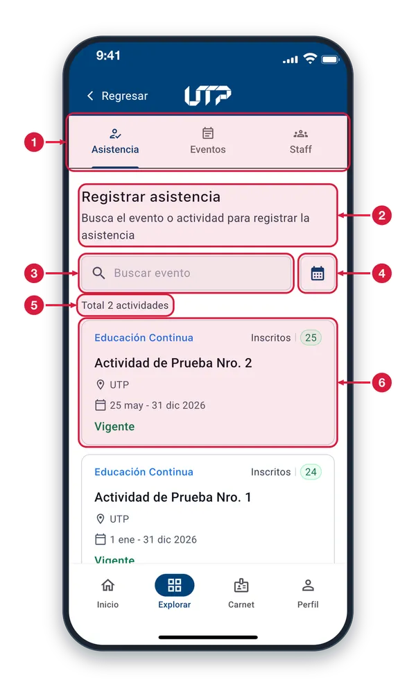
Pestañas del módulo Asistencia (la activa), Eventos y Staff. Toca una para cambiar de sección: en Eventos gestionas los eventos y en Staff, las personas de apoyo y sus roles.
Registrar asistencia Encabezado de la pestaña. Aquí aparecen las actividades en las que tienes permiso para registrar la asistencia.
Buscar evento Escribe parte del nombre de la actividad o de su lugar y la lista se filtra mientras escribes.
Filtrar por fechas Toca el calendario para elegir un rango de fechas y ver solo las actividades de esos días. Para quitar el filtro, toca la X del rango que aparece debajo.
Total de actividades Indica cuántas actividades cumplen la búsqueda y el filtro de fechas que tienes puestos.
Tarjeta de actividad Muestra el tipo, el nombre, el lugar, las fechas, cuántas personas están inscritas y el estado (Vigente, Inicia hoy, Finalizado…). Toca la tarjeta para abrir la actividad; las demás funcionan igual.
Pestaña Asistencia2 de 5
Aquí ves las actividades que administras y eliges una para registrar la asistencia de sus inscritos.
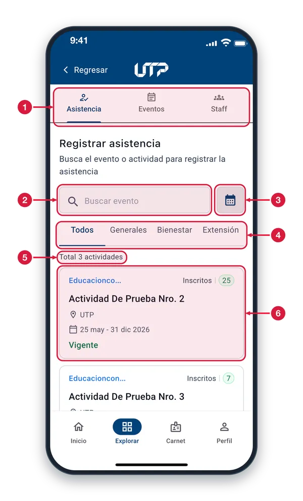
Pestañas del módulo Cambian de sección dentro de Gestión de Eventos. Asistencia, la pestaña activa, es donde registras la asistencia; Eventos y Staff son las otras secciones.
Buscar evento Escribe el nombre del evento o de la actividad para encontrarla más rápido entre las que puedes administrar.
Filtrar por fecha Toca el icono del calendario para elegir una fecha y ver solo las actividades de ese día.
Filtro por dependencia Toca Todos para ver todo, o Generales, Bienestar o Extensión para ver solo las actividades de esa dependencia. La pestaña subrayada es la que está activa.
Total de actividades Indica cuántas actividades aparecen con la búsqueda y el filtro que tienes aplicados.
Tarjeta de actividad Resume el tipo, el nombre, el lugar, las fechas, el estado (por ejemplo, Vigente) y cuántas personas están inscritas. Toca la tarjeta para abrir su detalle; las demás funcionan igual.
Detalle de la actividad3 de 5
Resume la actividad: tipo, descripción, fechas, encargado, lugar y cuánta asistencia se ha registrado.
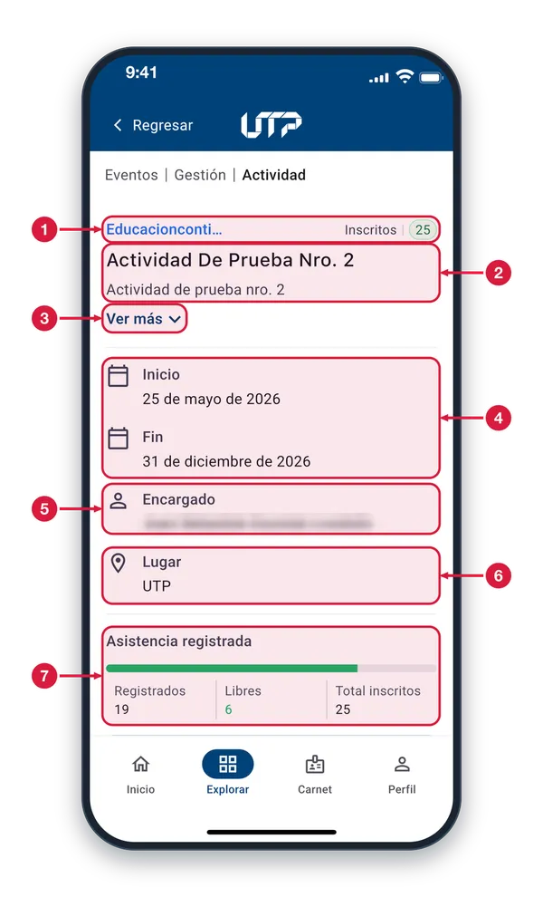
Tipo e inscritos A la izquierda, el tipo de actividad; a la derecha, el número de personas inscritas en ella.
Nombre y descripción Nombre de la actividad y una descripción corta de lo que trata.
Ver más Toca «Ver más» para desplegar la descripción completa de la actividad.
Fechas de inicio y fin Indican el día en que empieza la actividad y el día en que termina.
Encargado Persona responsable de la actividad.
Lugar Sitio donde se realiza la actividad.
Asistencia registrada La barra verde muestra el avance. Registrados: personas con asistencia ya marcada. Libres: las que faltan por registrar. Total inscritos: todas las personas de la actividad.
Acciones de la actividad4 de 5
Desde el detalle toca «Registrar la asistencia» para empezar. También puedes ver o inscribir personas.
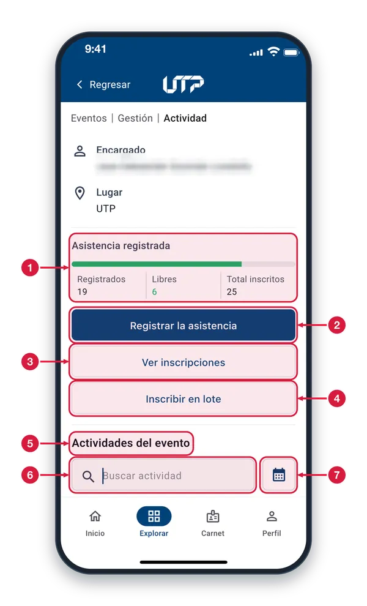
Resumen de asistencia Barra de avance con Registrados, Libres y Total inscritos. Sirve para ver de un vistazo cuántas personas faltan por registrar.
Registrar la asistencia Es el botón principal. Abre las modalidades para marcar quién asistió: QR, documento de identidad, lista, soporte o carga masiva.
Ver inscripciones Abre la lista de personas inscritas en la actividad para que la consultes.
Inscribir en lote Sirve para inscribir a varias personas a la vez en la actividad, sin hacerlo una por una.
Actividades del evento Debajo aparece la lista de las actividades que pertenecen al mismo evento. Desplázate hacia abajo para verla.
Buscar actividad Escribe el nombre de una actividad del evento para encontrarla en la lista.
Filtrar por fecha Toca el calendario para filtrar la lista de actividades del evento por fecha.
Cómo registrar la asistencia5 de 5
Elige cómo vas a registrar la asistencia: con la cámara, con una lista o con un archivo, según tu grupo.
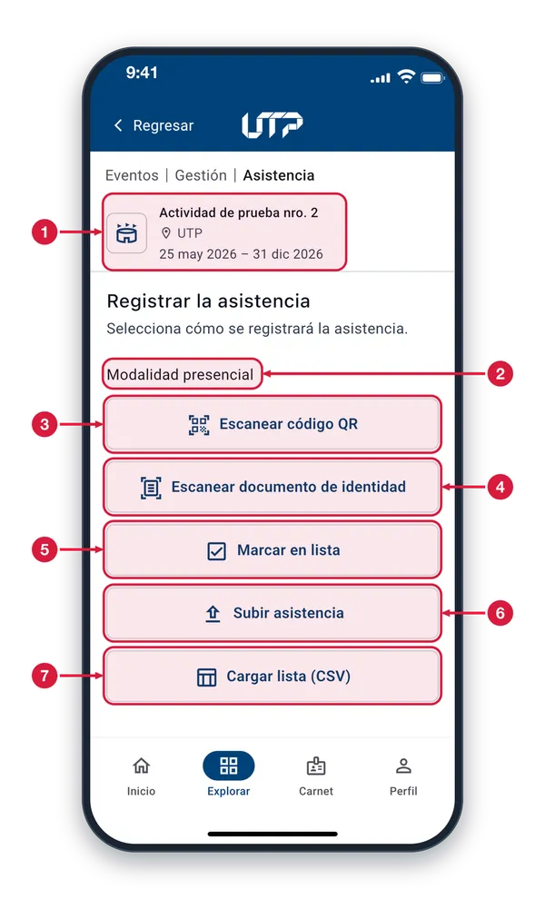
Actividad seleccionada Muestra el nombre, el lugar y las fechas de la actividad. Revisa que sea la correcta antes de elegir una modalidad.
Modalidad presencial Agrupa las cinco opciones para registrar a las personas que están presentes en la actividad.
Escanear código QR Elige la sesión y apunta la cámara al código QR de cada asistente para registrarlo. Ideal en la puerta, cuando las personas llegan una a una.
Escanear documento Elige la sesión y lee con la cámara el documento de identidad de cada persona. Úsalo cuando alguien no trae su código QR.
Marcar en lista Elige la sesión y marca con una casilla, en la lista de inscritos, a quienes asistieron. Útil en grupos pequeños o si no hay cámara.
Subir asistencia (soporte) Adjunta un archivo de respaldo de la asistencia (PDF, JPG o PNG). Se explica en la pantalla «Subir soporte».
Cargar lista (CSV/Excel) Registra la asistencia de muchas personas a la vez con un archivo de Excel o CSV. Ideal para grupos grandes. Se explica en «Cargar lista».
REGISTRO DE ASISTENCIA · QR Y DOCUMENTO
Selección de sesión1 de 3
Si la actividad tiene varias sesiones, elige aquí la que corresponde antes de abrir la cámara.
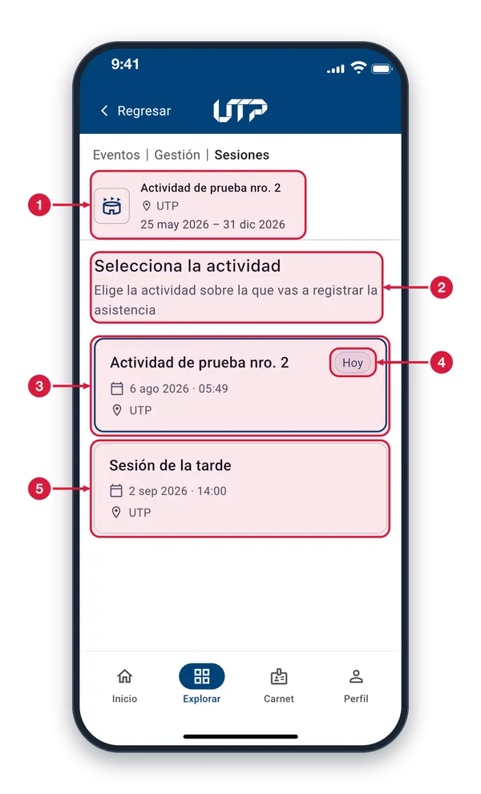
Actividad Te recuerda en qué actividad estás: nombre, lugar y fechas generales.
Instrucción Pide que elijas la sesión sobre la que vas a registrar la asistencia. Cada tarjeta de abajo es una sesión de la actividad.
Tarjeta de sesión Muestra el nombre, la fecha, la hora y el lugar de la sesión. Toca la tarjeta para elegirla y seguir con el registro. La sesión de hoy aparece resaltada con borde azul.
Etiqueta «Hoy» Indica que esa sesión es la de hoy. Normalmente es la que debes elegir para registrar a quienes llegan.
Otras sesiones Las demás sesiones de la actividad, por ejemplo una de otra fecha. Funcionan igual: toca la que necesites.
Permiso de cámara2 de 3
La primera vez que usas la cámara, el teléfono te pide permiso. Debes aceptarlo para poder escanear.
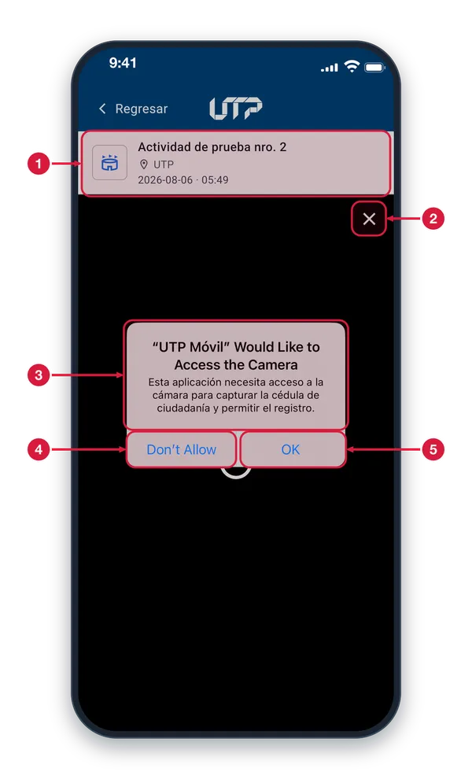
Sesión elegida Muestra la actividad y la fecha y hora de la sesión que elegiste; el registro se hará sobre esa sesión.
Cerrar Toca la X para cerrar la cámara y salir sin registrar a nadie.
Aviso de permiso Mensaje del teléfono que pide usar la cámara. Aparece solo la primera vez, en el idioma del teléfono, y sirve para escanear tanto códigos QR como documentos.
Don't Allow (No permitir) Niega el acceso y la cámara no se abre. Para usarla después, activa el permiso en Ajustes del teléfono, en la configuración de UTP Móvil.
OK (Permitir) Toca OK para dar el permiso. Se abre el lector de la cámara y ya puedes escanear. El teléfono recuerda tu respuesta y no vuelve a preguntar.
Cámara no disponible3 de 3
Si la cámara no se abre, aparece este mensaje. Regresa y usa otra modalidad para seguir registrando.
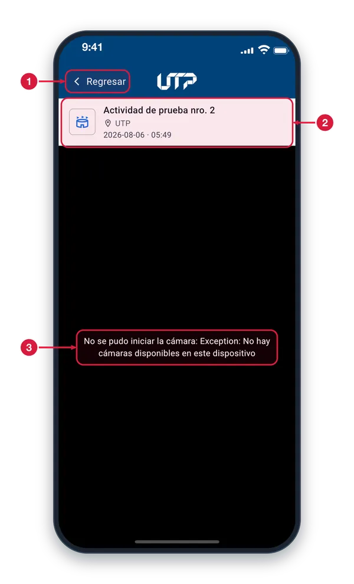
Regresar Vuelve a la pantalla anterior. Desde allí puedes elegir otra modalidad de registro, como «Marcar en lista».
Sesión elegida Actividad, lugar y fecha y hora de la sesión en la que ibas a registrar la asistencia.
Aviso de cámara La cámara no pudo abrirse. Revisa que el teléfono tenga cámara, que ninguna otra app la use y que el permiso esté activo en Ajustes. Si sigue igual, usa «Marcar en lista».
REGISTRO DE ASISTENCIA · MARCAR EN LISTA
Marcar en lista: elige la sesión1 de 7
Antes de ver la lista de inscritos, elige la sesión en la que vas a marcar la asistencia.
Actividad Te recuerda en qué actividad estás: nombre, lugar y fechas generales.
Instrucción Pide que elijas la sesión. Cada tarjeta de abajo es una sesión de la actividad.
Sesión de hoy Toca la tarjeta para elegir la sesión. Se abre la «Lista de inscritos» para marcar a quienes asistieron. La sesión de hoy aparece resaltada con borde azul.
Etiqueta «Hoy» Señala la sesión del día. Normalmente es la que debes elegir.
Otras sesiones Las demás sesiones de la actividad. Toca la que corresponda si vas a registrar a alguien en otra fecha.
Lista de inscritos2 de 7
Marca con la casilla a quienes asistieron y toca «Guardar asistencia» para registrarlos de una vez.
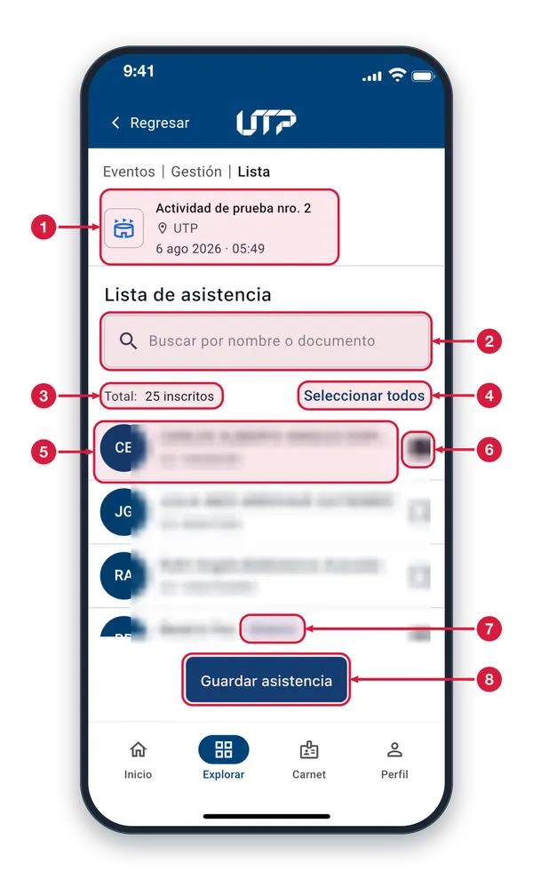
Actividad y sesión Actividad y fecha y hora de la sesión en la que estás marcando la asistencia.
Buscador de inscritos Escribe un nombre o un número de documento para encontrar a una persona sin recorrer toda la lista.
Total de inscritos Indica cuántas personas inscritas aparecen en la lista. El número cambia cuando usas el buscador.
Seleccionar todos Marca de una vez a todas las personas que aparecen en la lista. Después puedes quitar la marca a quien no asistió.
Fila de inscrito Cada fila muestra las iniciales, el nombre y el documento de la persona. Las demás filas funcionan igual; desplázate para ver a todos.
Casilla de asistencia Toca la casilla para marcar o quitar la asistencia de esa persona. Las que ya tienen asistencia registrada aparecen marcadas.
Etiqueta «Externo» Identifica a la persona que no tiene vínculo con la UTP. Se marca igual que las demás.
Guardar asistencia Guarda la asistencia de las personas marcadas. Al terminar aparece la pantalla «Asistencia registrada» con el día y la hora.
Buscar en la lista3 de 7
Escribe en el buscador para ver solo a las personas que coinciden y marcar su asistencia sin recorrer la lista.
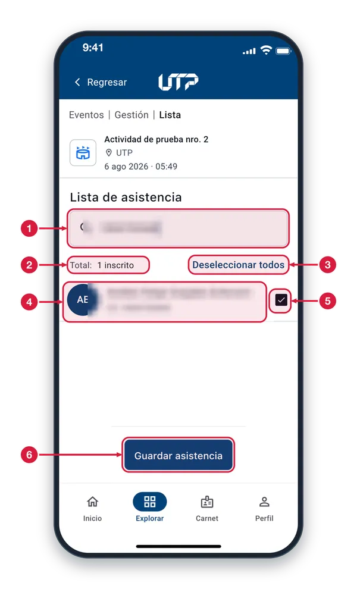
Buscador con texto Escribe aquí el nombre o el documento de la persona. La lista se reduce a quienes coinciden con lo escrito.
Total filtrado Ahora indica cuántas personas coinciden con la búsqueda (aquí, 1 inscrito) y no el total de la actividad.
Deseleccionar todos Cuando todas las personas visibles están marcadas, el botón cambia a «Deseleccionar todos» y quita la marca a las que se ven. Si no, dice «Seleccionar todos».
Resultado de la búsqueda Aparece solo la persona buscada. Su casilla está marcada porque ya tiene la asistencia registrada.
Casilla marcada La palomita significa que la asistencia de esa persona está registrada. Tócala si necesitas quitarle la marca.
Guardar asistencia Guarda las marcas que hagas en la lista. Mientras no lo toques, los cambios no se guardan.
Desmarcar a alguien4 de 7
Para corregir un error, quita la marca de una persona ya registrada: aparece «Se quitará» y cambia el botón inferior.
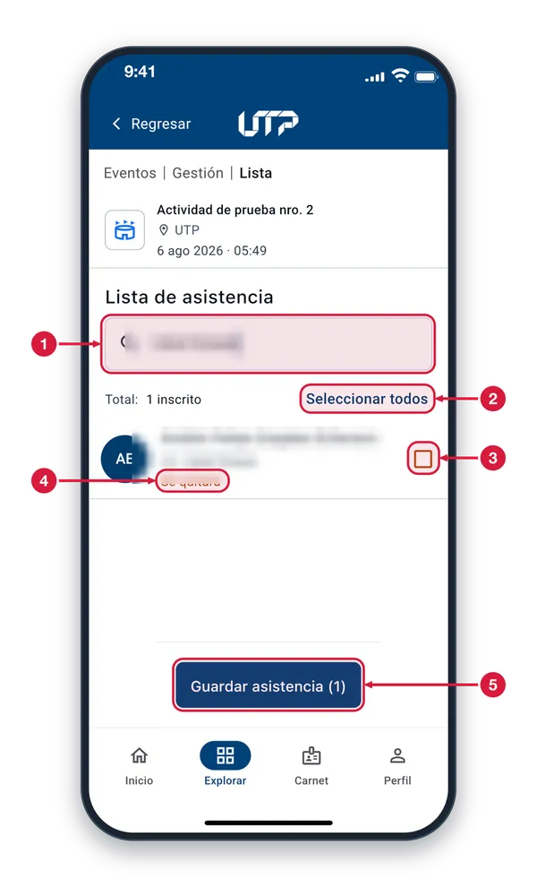
Buscador Úsalo para encontrar rápido a la persona cuya asistencia quieres corregir: escribe su nombre o su documento.
Seleccionar todos Como ya no hay nadie marcado entre las personas visibles, vuelve a decir «Seleccionar todos». No lo toques si solo corriges a una persona.
Casilla desmarcada Al tocar una casilla marcada queda vacía y con borde naranja: la asistencia de esa persona está por quitarse.
Aviso «Se quitará» Texto naranja bajo el nombre. Indica que, al guardar, se le quitará la asistencia registrada; todavía no se ha quitado.
Guardar asistencia (1) El número entre paréntesis indica cuántas personas tienen un cambio pendiente. Al tocarlo se abre «Confirmar el retiro» para que lo apruebes.
Confirmar el retiro5 de 7
Antes de quitar una asistencia la app pide confirmación. Revisa a quién se la vas a quitar y decide si continúas.
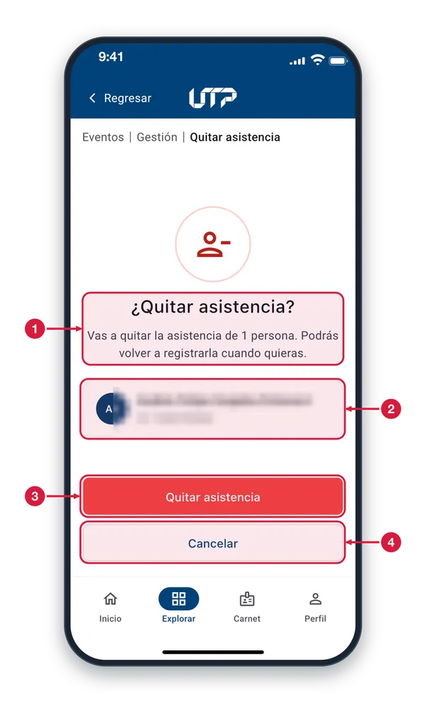
Aviso de confirmación Pregunta si quieres quitar la asistencia e indica a cuántas personas. Puedes volver a registrarla cuando quieras, así que el cambio se puede corregir.
Persona afectada Muestra a quién se le quitará la asistencia: iniciales, nombre y documento. Verifica que sea la persona correcta.
Quitar asistencia Botón rojo que confirma el retiro. Se quita la asistencia y regresas a la lista con la casilla vacía.
Cancelar No quita nada: la persona sigue con su asistencia registrada. Úsalo si te equivocaste de persona.
Asistencia quitada6 de 7
Tras confirmar, vuelves a la lista y la casilla de la persona queda vacía: ya no tiene asistencia registrada.
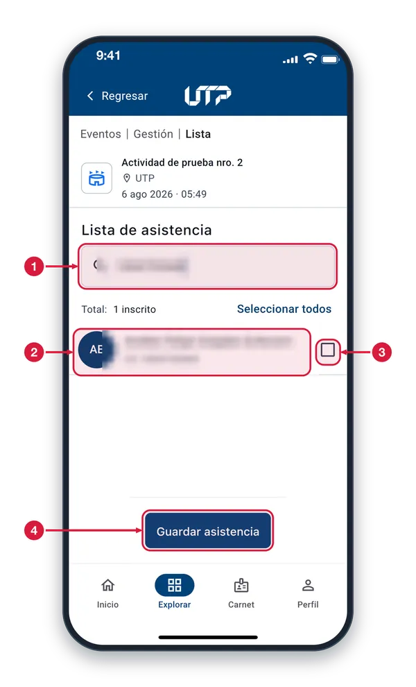
Búsqueda activa El texto de la búsqueda sigue ahí y la lista muestra solo a esa persona. Borra el texto para ver otra vez a todos los inscritos.
Fila de la persona La persona sigue en la lista de inscritos, pero ya sin asistencia registrada. Desapareció el aviso «Se quitará».
Casilla vacía Fíjate en esta casilla: si está vacía, el cambio quedó hecho. Si te equivocaste, vuelve a marcarla y toca «Guardar asistencia».
Guardar asistencia Vuelve a decir solo «Guardar asistencia», sin número, porque ya no hay cambios pendientes.
Asistencia registrada7 de 7
Esta pantalla confirma que la asistencia quedó guardada y te muestra el día y la hora del registro.
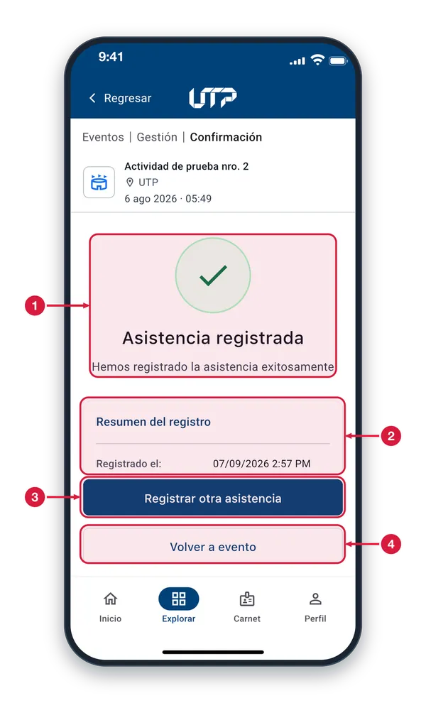
Confirmación de éxito El círculo verde con la palomita y el mensaje «Hemos registrado la asistencia exitosamente» confirman que todo se guardó bien.
Resumen del registro En «Registrado el» aparecen la fecha y la hora del registro, con la hora en formato de 12 horas (por ejemplo, 2:57 PM).
Registrar otra asistencia Te lleva de nuevo a las modalidades de registro para marcar a otra persona o usar otra opción.
Volver a evento Regresa al evento cuando ya terminaste de registrar.
REGISTRO DE ASISTENCIA · SUBIR SOPORTE
Subir el soporte de asistencia
Adjunta un documento de respaldo de la asistencia (PDF o imagen) y guárdalo cuando esté cargado.
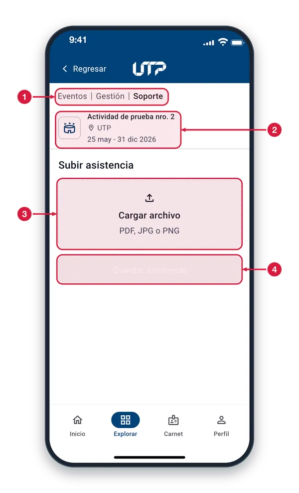
Ruta de navegación Muestra dónde estás: Eventos > Gestión > Soporte. Para volver a la pantalla anterior toca «Regresar», arriba a la izquierda.
Actividad seleccionada Es la actividad a la que pertenece el soporte: nombre, lugar y fechas. Verifica que sea la correcta antes de subir el documento.
Cargar archivo Zona para adjuntar el documento de respaldo. Tócala y elige un archivo PDF, JPG o PNG de tu teléfono.
Guardar asistencia Se ve en gris (inactivo) mientras no elijas un archivo. Cuando ya lo tengas elegido, tócalo para guardar el soporte.